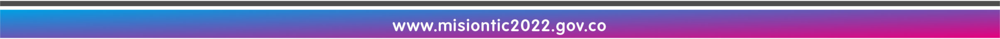

Realiza una reflexión sobre los conceptos base del lenguaje de programación python.
Acciones de aprendizaje
1. Visualiza el video sobre generalidades de Python:
- Bedoya, A. [XACA RANA]. (28 de abril de 2021). 02 Python 101 - Generalidades [Video].
2. Usando la función imprimir y atajos de teclado, imprima los siguientes mensajes en la consola.
3. Responda de manera personal las siguientes preguntas y analice:
- a. ¿Para qué sirve la tecla tabulación?
- b. ¿Por qué es importante la identación de un programa en Python?
- c. ¿Qué es un shortcut o atajo?
- d. ¿Qué es la terminal?, ¿Para qué se usa en el proceso de creación de un programa?
- e. ¿Qué es un comentario? Realice un comentario de múltiples líneas
- f. ¿Para qué sirven las extensiones? Consulte e instale 3 extensiones útiles a la hora de programar con Python.
- g. ¿Qué es Case Sensitive?,¿Por qué es importante en programación?
4. Publica, en el foro: Un vídeo de la autoría del estudiante, donde responda a las preguntas del punto 3 y explique las tres extensiones seleccionadas funcionando en el IDE y porque recomienda su uso.
Formas de trabajo
-
Individual: el estudiante es responsable de su proceso de aprendizaje y de las actividades que realiza.
Tiempos (Semana 1)
- Trabajo autónomo del estudiante: 3 horas
- Acompañamiento docente: 1 hora.
• Evaluación formativa:
Identifica las principales partes y características de un IDE (herramienta de desarrollo de software) y ejecutar un programa.
